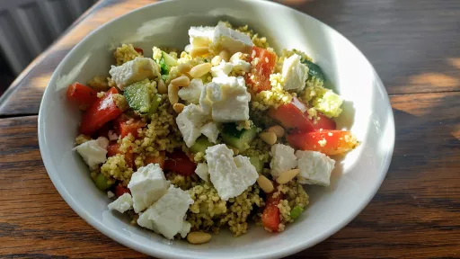

10-minute couscous salad
10 mins
Serves 2
Vegetarian

This makes a great lunchbox filler for a day out and is equally good at home from the fridge
Ingredients
- 100 g couscous
- 200 ml hot low salt vegetable stock (from a cube is fine)
- 2 spring onions
- 1 red pepper
- ½ cucumber
- 50 g feta cheese, cubed
- 2 tbsp pesto
- 2 tbsp toasted pine nuts
Instructions
- Tip the
couscous100 g
into a large bowl and pour over the stock200 ml
. Cover, then leave for 10 mins until fluffy and all the stock200 ml
has been absorbed. Meanwhile, slice the onions2
and pepper1
, and dice the cucumber½
. Add these to the couscous100 g
, fork through the pesto2 tbsp
, crumble in the feta50 g
, then sprinkle over pine nuts2 tbsp
to serve.
-
kcal
327
-
fat
17 g
-
saturates
5 g
-
carbs
33 g
-
sugar
7 g
-
fibre
2 g
-
protein
13 g
-
salt
0.88 g
www.bbcgoodfood.com
Short Link
Long Link